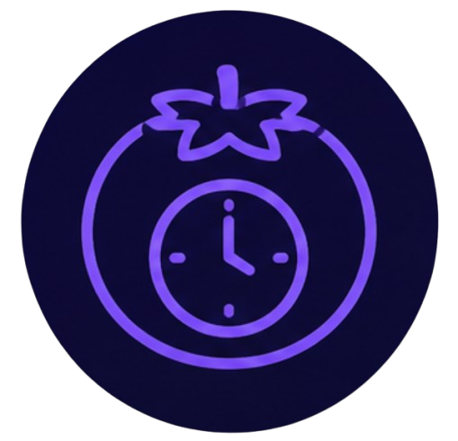
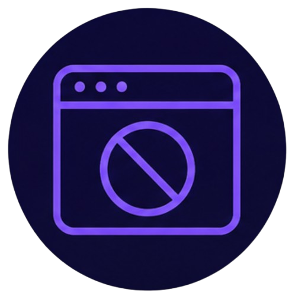
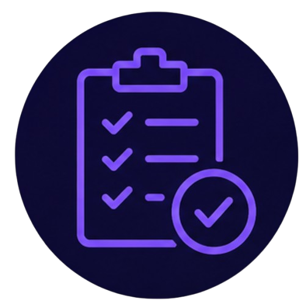

Enfoque y concentración
En un mundo lleno de distracciones digitales, mantener la concentración se ha convertido en uno de los mayores desafíos. La capacidad de enfocarnos en una tarea sin interrupciones es clave para la productividad, el aprendizaje y el bienestar general. Aquí encontrarás técnicas y herramientas que te ayudarán a recuperar tu atención y a trabajar de manera más eficiente.
Tip del día
Usa la regla 20-20-20: Cada 20 minutos, mira algo a 20 pies de distancia (unos 6 metros) durante al menos 20 segundos. Esto reduce la fatiga visual, descansa tus ojos y renueva tu enfoque para seguir trabajando con claridad.

Técnica Pomodoro
El método Pomodoro consiste en trabajar en intervalos de 25 minutos de enfoque total, seguidos de 5 minutos de descanso. Después de 4 ciclos, tomas un descanso más largo de 15-30 minutos.
Cómo aplicarlo en tu día a día: Usa un temporizador (puede ser el de tu teléfono o una app). Durante los 25 minutos, elimina todas las distracciones: silencia el teléfono, cierra pestañas innecesarias y concéntrate solo en una tarea. Los descansos son tan importantes como el trabajo.

Bloqueadores de sitios
Herramientas como Forest, Freedom o Cold Turkey bloquean sitios web y aplicaciones que te distraen durante tus horas de trabajo o estudio.
Cómo aplicarlo en tu día a día: Identifica qué páginas te roban más tiempo (redes sociales, noticias, entretenimiento). Activa un bloqueador al empezar tu jornada y desbloquea solo cuando termines tus tareas prioritarias.
Música para concentración
Música como Focus@Will, Brain.fm o sonidos de lluvia y naturaleza están diseñados para mejorar la concentración y reducir el ruido mental.
Cómo aplicarlo en tu día a día: Crea una playlist con música instrumental, sonidos ambientales o pistas de concentración. Úsala durante tus sesiones de trabajo o estudio para crear un entorno propicio para el enfoque.

Planificación diaria
Herramientas como Todoist, Notion o la técnica del Eisenhower te ayudan a organizar tus tareas y priorizar lo que realmente importa.
Cómo aplicarlo en tu día a día: Dedica 10 minutos cada mañana a planificar tu día. Escribe las 3 tareas más importantes que debes completar y comienza por la más difícil (técnica "come la rana"). Revisa tu progreso al final del día.